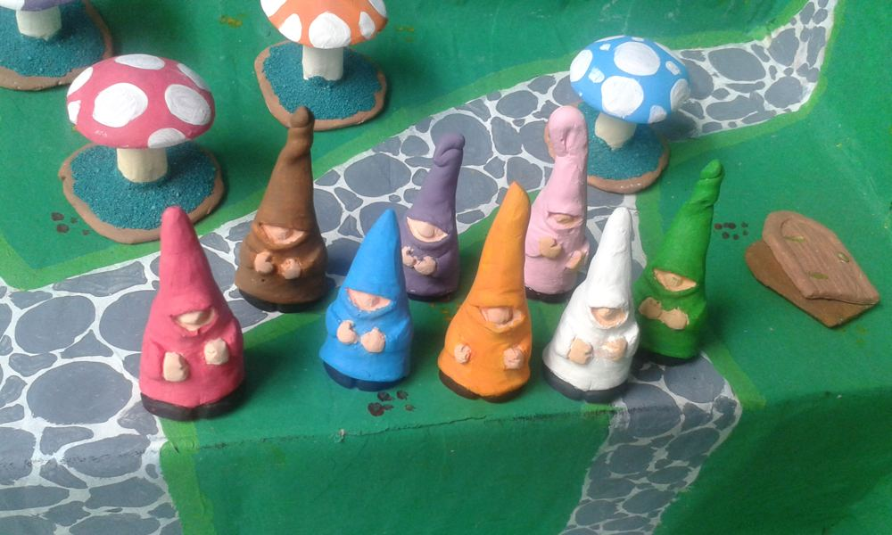
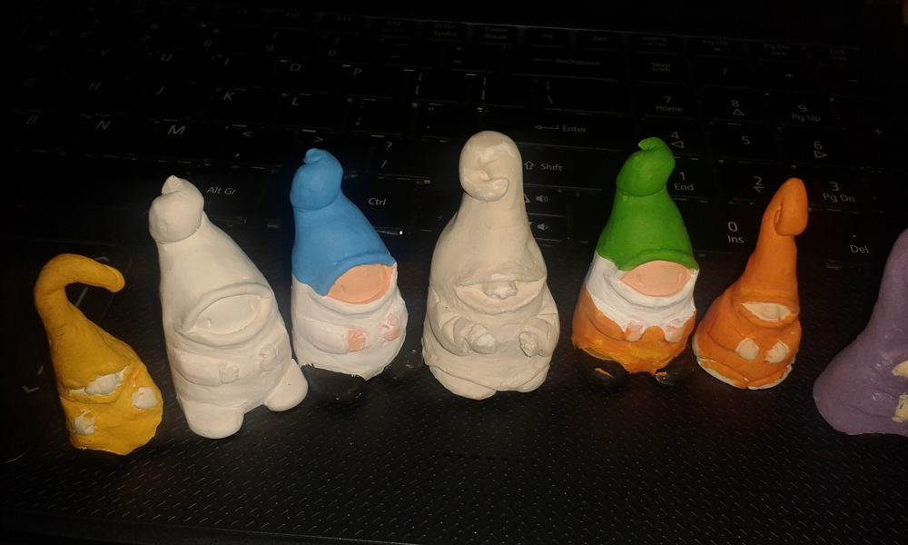
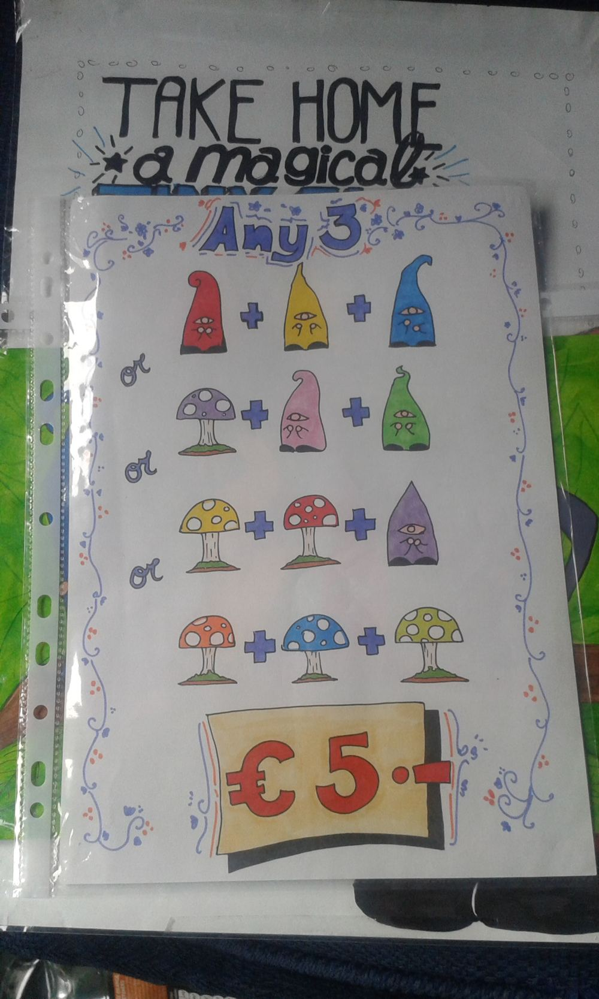
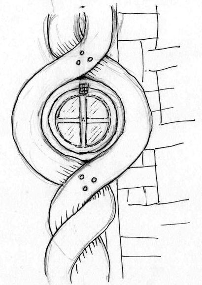
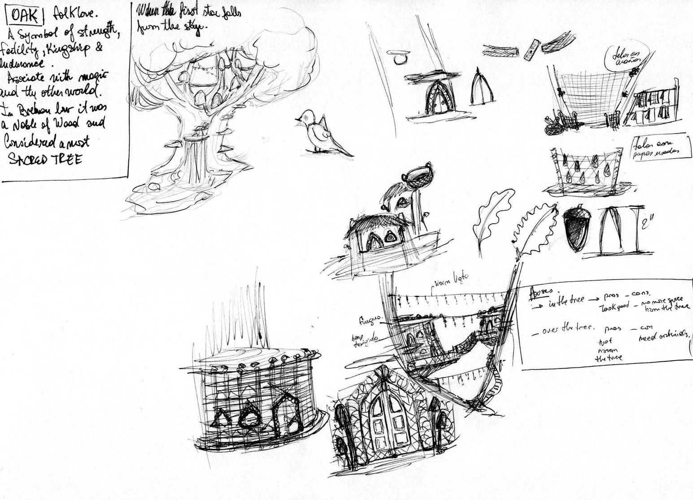
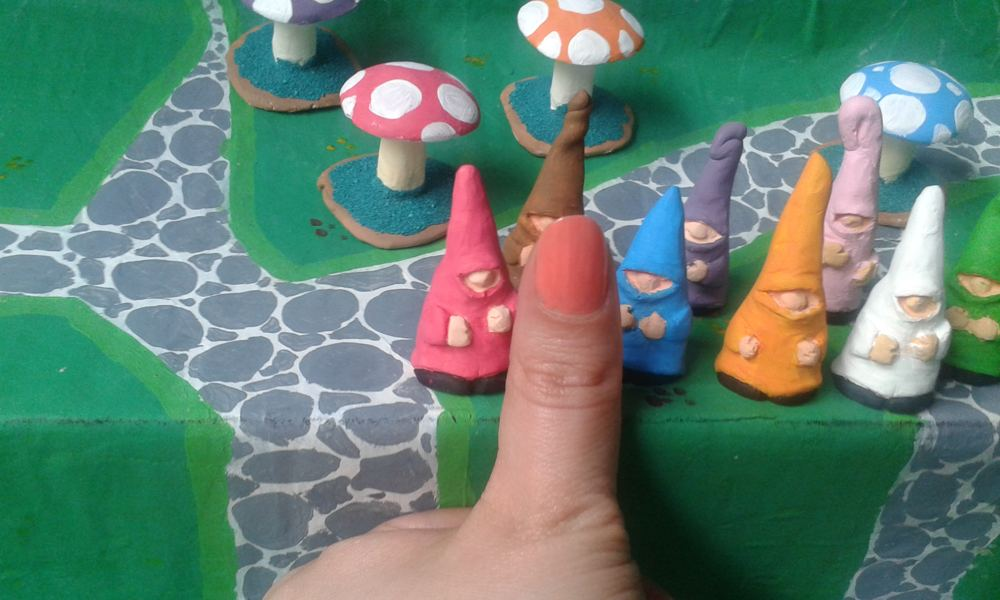
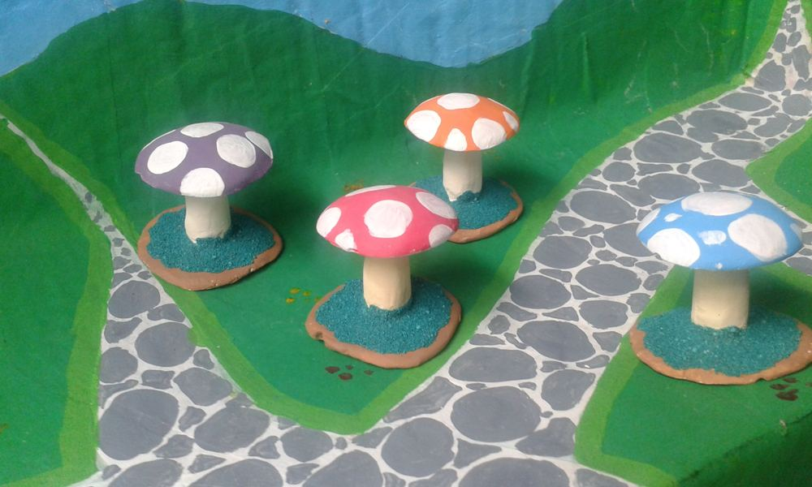
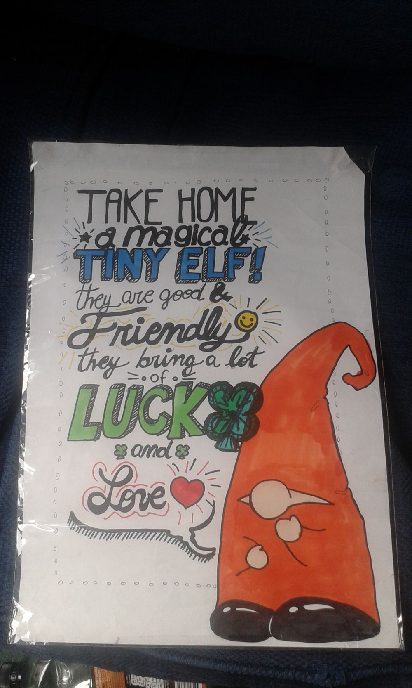

About
or, how the elves got hereWritten by Gisi Zimerman, with interruptions from the elves

It started on the pavement in Temple Bar. I was living in Dublin, sitting on the ground and drawing, and next to me there was a hand-lettered sign and a little crowd of magical tiny elves. People stopped for the drawing. Then they crouched down and stayed for the elves.
Every elf was about two inches tall, with a crooked pointed hat pulled right down over the eyes, a round nose poking out from under the brim, two round hands and a pair of black boots peeking out underneath. No two were the same, and that was the point.
i. Clay, plaster, paint

Each elf began as a model in clay. From the clay I made a mould, and from the mould I cast them one at a time in plaster of Paris. They came out white and soft-edged, a little like sugar.
Then came the paint, all of it by hand. A hat a shade darker here, a nose a little rounder there. Plaster keeps the mark of every brush, so even elves from the same mould grew into different characters by the time they were dry.
ii. Three elves make a flag
On the street they were €2 each, or any three for €5. And that's where the tourists surprised me: lots of them picked one green, one white and one orange, lined them up on the pavement and walked away with their own tiny Irish flag.
green + white + orange = one very small flag

I drew all the signs myself with markers: fat black outlines, flat bright colours, elves in purple and yellow and lime. Some of them are still in a folder somewhere, a bit wrinkled from the Dublin weather.
“They are good & friendly, they bring a lot of luck and love.” from the sign on the pavement, 2015
iii. A small promise
Back then I wrote myself a note about what kind of project this should be. It's still the rule.
made
only
Make them by hand. Make the packaging with little or no impact on the environment. If it can't be done gently, don't do it.
That's why every maker you'll find on this site makes things by hand too. No AI, no shortcuts.
iv. Where the elves live now

The elves never really stopped. They just moved somewhere smaller. Well, somewhere bigger, from where they stand.
They live in a 1:12 world now, the scale of dollhouses, where one inch stands for one foot. An elf is two inches tall, so in their world they're about two feet: tiny next to a full-size armchair, the right height to climb onto a cushion and get comfortable.
The armchair, the loaf of bread on the table and the house around them are all made by real miniature makers, people who spend days on a teacup the size of a lentil. The elves, being elves, have opinions about all of it. So they've started writing reviews.




v. What you'll find here
For now, nothing is for sale. This is a place to look closely.
- My Tiny World: the pieces I make myself.
- Makers: a hand-picked list of 1:12 makers whose work I love, starting around Seattle and Washington State, with links to their own shops.
- The Journal: short reviews and maker profiles, mostly written by the elves.
If you make tiny things by hand and you'd like the elves to come and look, I'd love to hear from you.
Gisi